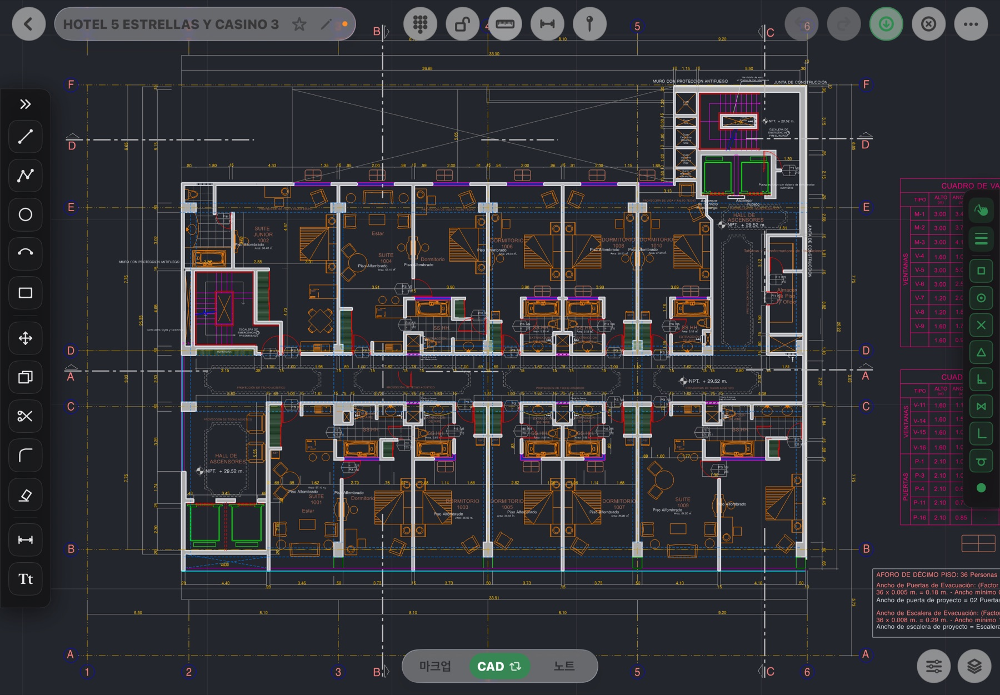
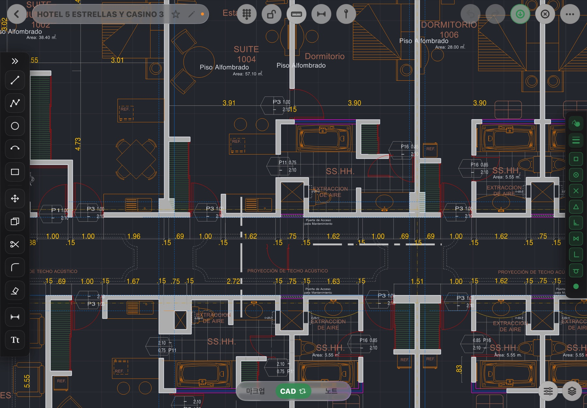
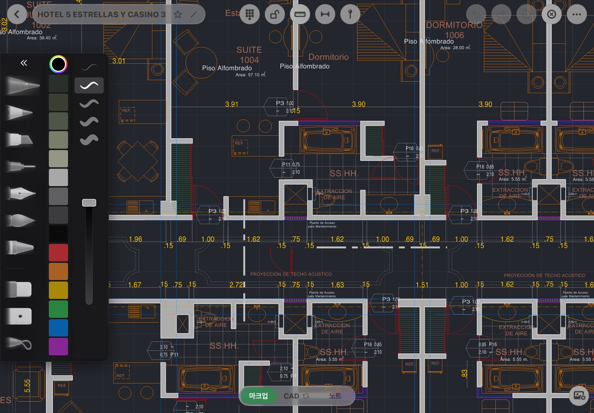
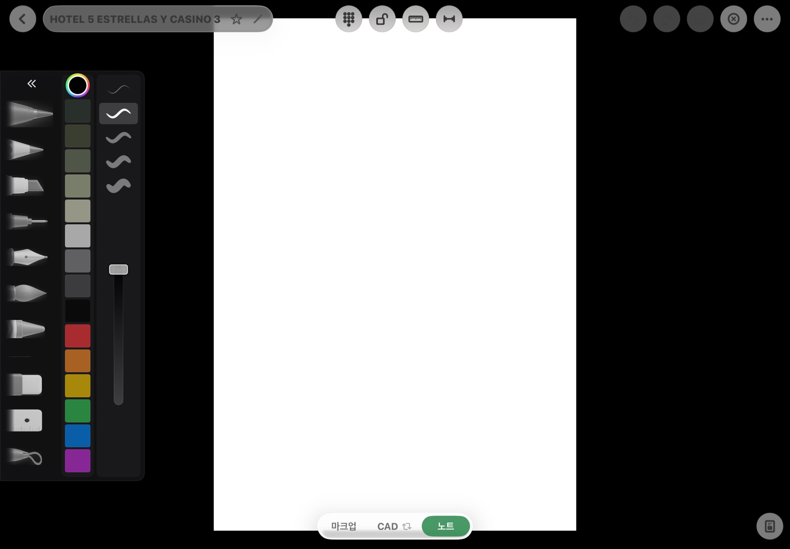

도면을 열고, 그리고, 표시하고, 꺼낸다 — 전부 iPad 위에서. 사무실로 돌아가 다시 그릴 필요가 없습니다.

CAD 작도, 손글씨 마크업, 사진이 달린 핀, 노트 페이지가 한 파일에 삽니다. 모드를 오가도 자리는 그대로입니다.
DXF는 앱 안에서 바로 파싱하고 단위를 묻습니다. DWG는 변환 서버를 거쳐 열립니다. PDF는 밑그림으로 깔고 축척(1:100 기본)을 맞춰 그 위에 그립니다 — PDF 벡터 선에도 스냅이 붙습니다.
선·폴리선·원·호·사각형·문자, 이동·복사·모깎기·자르기·지우기·치수. 끝점·중간점·중심·교차 스냅과 직교, 수치 키패드로 정확하게.
Apple Pencil 손글씨 마크업은 도면 좌표에 붙어 확대·이동해도 제자리. 핀에 사진·메모를 꽂고, 같은 파일에 노트 페이지를 씁니다.
Metal 벡터 렌더 + 래스터 타일 피라미드. 18만 도형 도면을 열고 팬·줌하는 동안 프레임을 유지하고, 멈추면 즉시 선명해집니다.
A4/A3 플롯에 1:50·1:100·1:150 축척, 창 지정, 종이 위 100mm 검증 눈금. DXF는 v1 작도 범위를 무손실로 되돌립니다(R2000).
도면 위 핀을 모아 표지·목록·사진·메모가 든 보고서 한 부로. 하자·지시·질문을 도면 자리 그대로 전달합니다.
카탈로그에 이름만 있는 도구는 넣지 않았습니다. 아래 12개는 오너 기기에서 매 라운드 검증된 것입니다.

도구를 들고 도형 위에 머물면 끝점·중간점·중심·교차 스냅점이 미리 보입니다. 직교를 켜면 가로·세로가 자로 잰 듯 맞습니다.

펜·마커·연필·지우개·올가미·자. 획은 도면 좌표에 고정되어 확대·축소·이동 중에도 도면과 갈라지지 않습니다. 굵기는 도면 단위 기준이라 축척이 바뀌어도 의미가 같습니다.

백지·줄·도트·모눈·제도 모눈, 밝은/크림/검은 종이. 끝까지 당기면 페이지가 하나 더 생깁니다. 회의 메모와 도면이 한 프로젝트에 함께 저장됩니다.
아래 수치는 개발 기기(iPad Air 11" M4)에서 프로브 로그로 잰 값입니다. 광고 문구가 아니라 로그입니다.
| 항목 | 값 | 비고 |
|---|---|---|
| 정지·팬 프레임 | 60Hz 유지 (프레임 간격 중앙값 16.7ms) | 인코드 0.3~0.5ms · GPU 1~3ms |
| 큰 도면 | 181,422 도형 열림·조작 | 메모리 피크 ≈1.0GB · 51,307 도형 ≈0.4GB |
| 멈춘 뒤 선명해지기 | 6,938 도형 49ms · 46,529 도형 118ms | 오프메인 스냅샷 + 150ms 크로스페이드 |
| 마크업 잉크 표시 | 굽기 중앙값 5ms | 팬·핀치 중 잉크가 도면과 갈라지는 프레임 45%→19% |
| 편집 즉각 반영 | +100ms 안에 실제 표시 | 지우기·레이어 눈 감기·선·치수 전부 |
| 플롯 축척 | 종이 100mm 눈금 = 283.46pt | A3 인쇄물 실측 합격 |
| 자동 시험 | 5,142 실행 / 0 실패 | 패키지 전체 게이트, 매 안전지대마다 |
비공개 베타 기간에는 모든 기능이 무료로 열립니다. 아래는 정식 출시 때의 계획이며 바뀔 수 있습니다.
2026년 10월, TestFlight로 시작합니다. 건축·인테리어·시공 현장에서 도면을 다루는 분을 먼저 모십니다.